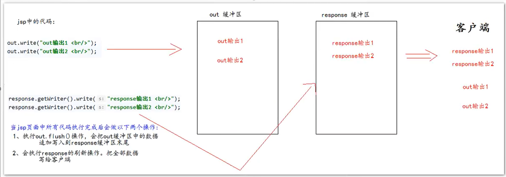

$JSP$ 简述
$jsp$ 页面本质上是一个 $Servlet$ 程序。
$Servlet$ 程序在处理服务器的回传时，可以将静态的 $html$ 返回给客户端，从而实现客户端能动态地显示 $html$ 页面。
当第一次访问 $jsp$ 页面时，服务器会将这个 $jsp$ 页面翻译成一个 $java$ 源文件，并对它编码成 $.class$ 字节码文件。这个对应的 $java$ 类会继承于 $HttpServlet$ 类，而且 $jsp$ 中的属性、方法、类等，都会加载到这个类当中，由于这个类继承于 $HttpServlet$ ，所以对于 $jsp$ 中的输出，类中也会加载并且将其翻译成 $html$ 回传给客户端。
$JSP$ 常用脚本
声明脚本
可在 <%! %> 中声明对于生成的这个 $java$ 类中的属性、方法、内部类等，可以声明 $private$ 以及 $static$ 。
1 | <%! |
表达式脚本
可在<%! %> 声明输出的表达式，可以输出整型、浮点型、字符串以及对象$(toString)$ 。
1、所有的表达式脚本都被翻译到 $java$ 类中的 _jspService() 方法中。
2、表达式脚本都会被翻译为 out.print() 回传给服务器，输出到页面上。
3、由于表达式脚本翻译的内容都在 _jspService() 中，所以 _jspService() 方法中的对象都可以直接使用。
4、_jspService() 方法中参数含有 $Servlet$ 中一样的 $request$ 以及 $response$ ，可以调用他们的方法。
5、在表达式脚本中的表达式不能以分号为结束。
1 | <%= |
代码脚本
可在 <% %> 中编写 $java$ 语句，里面的代码会直接放到 $java$ 中的 _jspService() 方法，故也可以直接调用 $request$ 以及 $response$ 。
1、代码脚本翻译之后都在 _jspService() 方法中。
2、故_jspService() 中的现有对象都可以直接调用。
3、代码脚本会相连在一起（比如一个 $for$ 循环被分离到两个相邻的代码脚本块中，也能正常运行）
4、代码脚本中可以使用表达式脚本，以便输出到页面中。
1 | <% |
$JSP$ 中的三种注释
$html$ 注释
$html$ 注释会被翻译到 $java$ 源代码中，在 _jspService() 方法里，以 out.writer() 输出到客户端页面中。
$java$ 注释
$java$ 注释会被翻译到 $java$ 源代码中，
$jsp$ 注释
真正的在 $jsp$ 中注释掉代码。
$JSP$ 的九大内置对象
$request$ — 请求对象
$response$ — 响应对象
$pageContext$ — $jsp$的上下文对象
$session$ — 会话对象
$application$ — $ServletContext$ 对象
$config$ — $ServletConfig$ 对象
$out$ — $jsp$ 输出流对象
$page$ — 指向当前 $jsp$ 的对象
$exception$ — 异常对象
（需要添加： $isErrorPage = true）$
四个域对象
$pageContext$ ($PageContextImpl$ 类)
当前 $jsp$ 页面范围内有效
$request$ ($HttpServletRequest$ 类)
一次请求有效
$session$ ($HttpServletSession$ 类)
一个会话范围内有效（打开浏览器访问服务器，直到关闭浏览器）
$application$ ($ServletContext$ 类)
整个 $web$ 工程范围内都有效，只要 $web$ 工程不停止，数据都在。
域对象是可以像 $map$ 存储键值的对象 (使用 $setAttribute(key,value)$) 。
$out.write()$ 与 $response.getWriter().write()$ 区别
一般来讲，呈现在页面中的内容会先是 $response.getWriter().write()$ 输出的内容，再是 $out.write()$ 的内容。
原因：在编译的时候，会自动执行 $out.flush()$ 操作，使得 $out.write()$ 缓冲区的内容加载到 $response.getWriter().write()$缓冲区的末尾，然后通过 $response$ 回传给页面。

由于 $jsp$ 翻译之后，底层源代码（即对应的 $java$ 类）都是使用 $out.write()$ 来进行输出的。所以在一般情况下，统一使用 $out.write()$ 输出，避免打乱页面内容的顺序。
$out.wirte()$ 与 $out.print()$ 区别：
$out.write()$ 输出字符串没有问题。
$out.print()$ 任何类型都会先转换为 $String$ 字符串类型，再调用 $out.write()$ 输出。
$JSP$ 三种常用标签
静态包含
<%@ include file = “” %> 在一个页面静态添加一个页面中的内容。如：<%@ include file = “/footer.jsp” %> 将脚页内容添加到本页面中。
特点：
1、静态包含不会翻译被包含的 $jsp$ 页面。
2、静态包含其实是把被包含的 $jsp$ 页面的代码拷贝到包含的位置上并输出。
动态包含
<jsp:include page=””><jsp:include> 动态包含。
动态包含也像静态包含一样，把被包含的内容执行输出到包含位置。
特点：
1、动态包含会把被包含的 $jsp$ 页面也翻译成 $java$ 文件。
2、动态包含底层代码使用如下代码去调用被包含的 $jsp$ 页面执行输出。
JspRuntimeLibrary.include(request , response , “/footer.jsp” , out , false);
3、当前页面会将 request、response、out 等 传给被包含的 $jsp$ 页面中，使得他们共享同一个 $out$ 缓冲区，从而获得这个完整的页面。
4、还可通过 <jsp:param key=”” value=””/> 将键值对传入给被包含页面。
1 | <jsp:include page="/footer.jsp"> |
转发标签
<jsp:forward page=””></jsp:forword> 请求转发。
如：<jsp:forward page=”/footer.jsp”></jsp:forword>，也是跟上面一样，添加被包含页面。